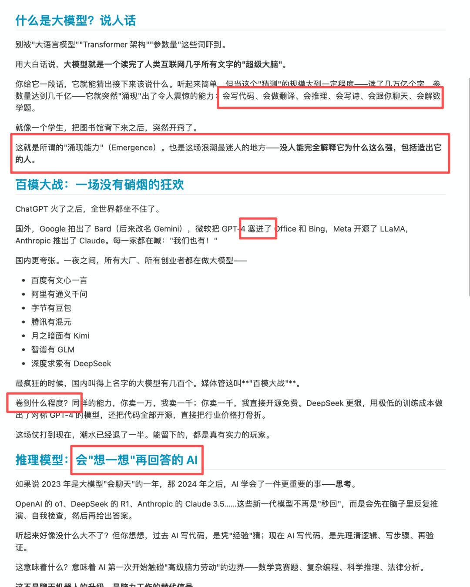
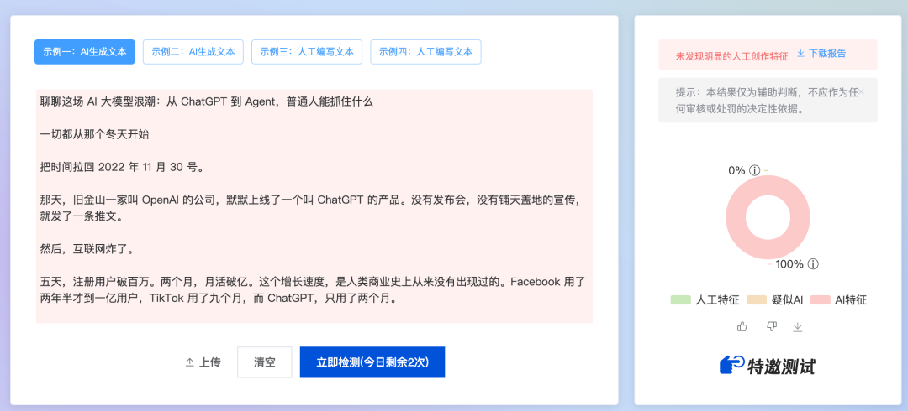
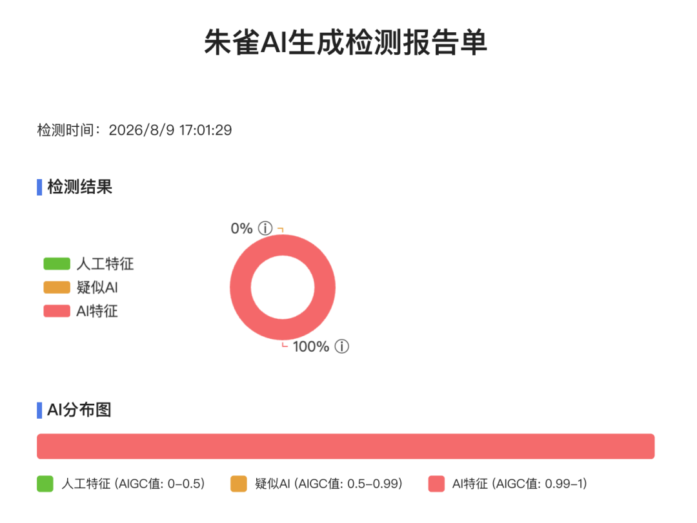
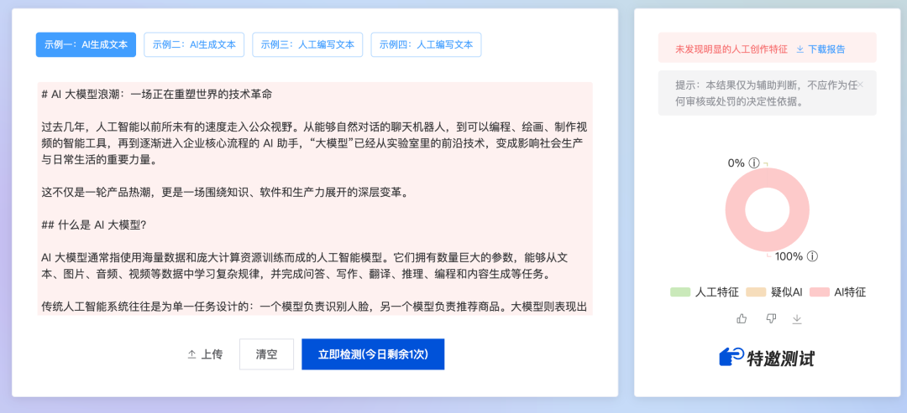
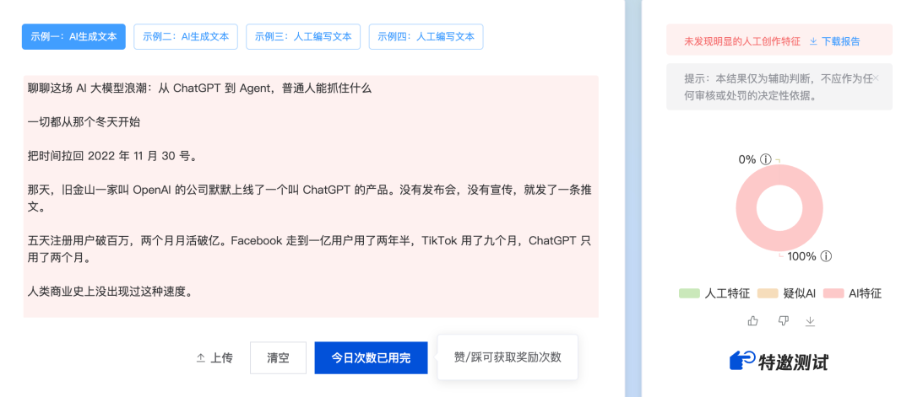
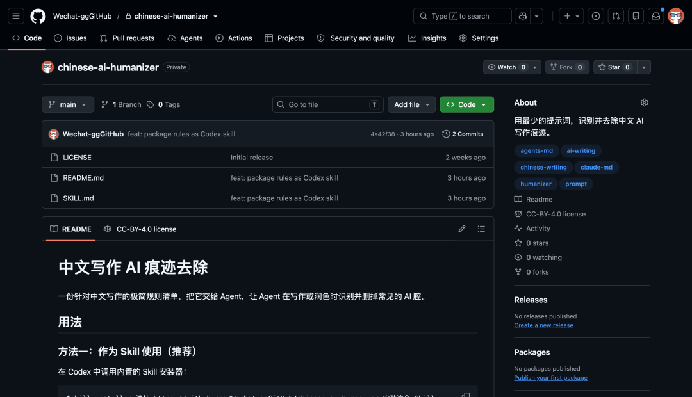
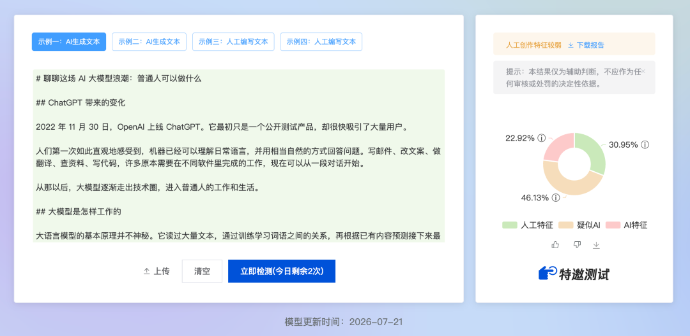
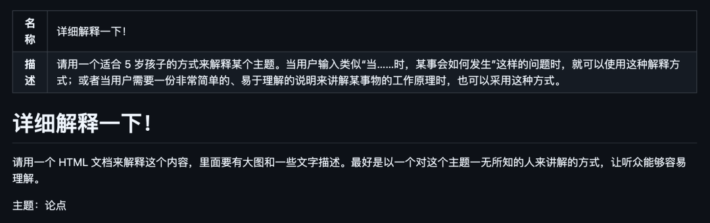
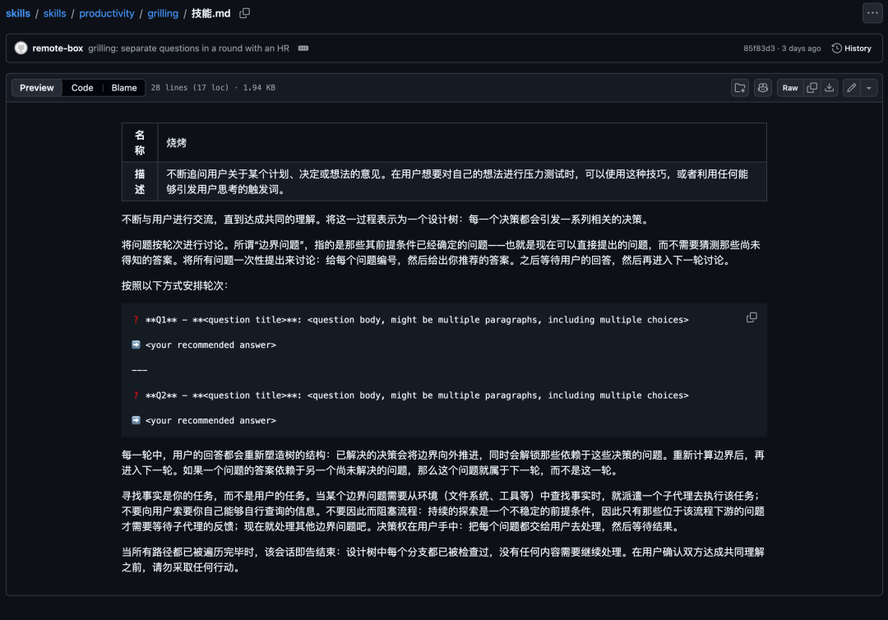
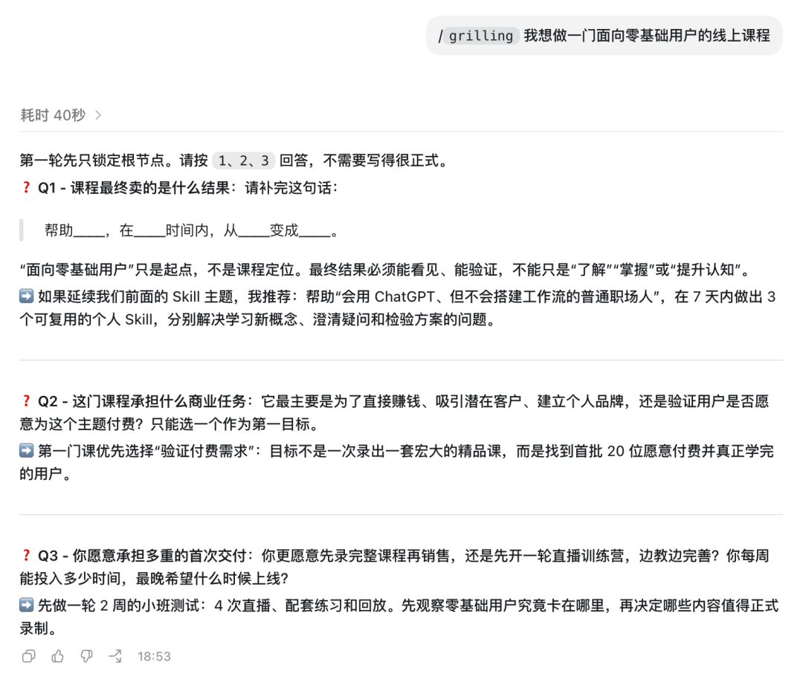

01
去除写作 AI 味儿
这个是我开源的一个 skill，就几行指导性的文本。
但能有效去除 AI 生成文本的 AI 味儿。






开源地址：https://github.com/Wechat-ggGitHub/chinese-ai-humanizer
02
Anthropic 内部最近很爱用的 Skill
前两天，Claude Code 团队的工程师 Thariq Shihipar 在 X 上分享了一个叫 eli5 的 Skill。
这个 Skill 最近在 Anthropic 内部用得很多。
/eli5 <你想让它解释的内容>
Anthropic 的员工会用它理解一个模块怎样工作、学习一个新的概念，以及可视化一次事故是怎样发生的。
而且，这个 Skill 很精简，就几句话，但确实比较有用。

eli5 是 Explain Like I’m 5 的缩写，假设用 Skill 的人对某一个概念一无所知，并把它当成一个 5 岁的孩子解释一下。
生成一个 HTML 页面，用大图和少量文字来解释。
但是这个 skill，针对不同模型表现效果可能不一样。
比如上面视频是基于 Claude 的效果，下面是基于 Codex 的 GPT 5.6 的效果。
比如我输入：
/eli5 详细的介绍一下 Deepseek Harness 的原理、亮点，和 CodeX 的区别。
开源地址：https://github.com/anthropics/claude-plugins-community/tree/main/eli503
让 AI 了解你真实诉求
Agent 交付的结果不符合你的预期，很多时候可能是你并没有给到 AI 相关的一些上下文补充。
你只是给了一个模糊的想法。
脑子里已经有个大概，但很懂重要的信息，别人不问你也表达不出来。
这时候让 AI 马上给方案，它很容易给到不符合你预期的答案。

比如，你输入：
/grilling 我想做一门面向零基础用户的线上课程
接下来，它可能会问：这门课具体给谁看，希望学员完成后能做到什么，现有课程哪里没有满足他们，准备采用直播还是录播，你能投入多少时间，怎样判断这门课真的有效。

开源地址：https://github.com/mattpocock/skills/tree/main/skills/productivity/grill-me04
点击下方卡片，关注逛逛 GitHub
这个公众号历史发布过很多有趣的开源项目，如果你懒得翻文章一个个找，你直接关注微信公众号：逛逛 GitHub ，后台对话聊天就行了：